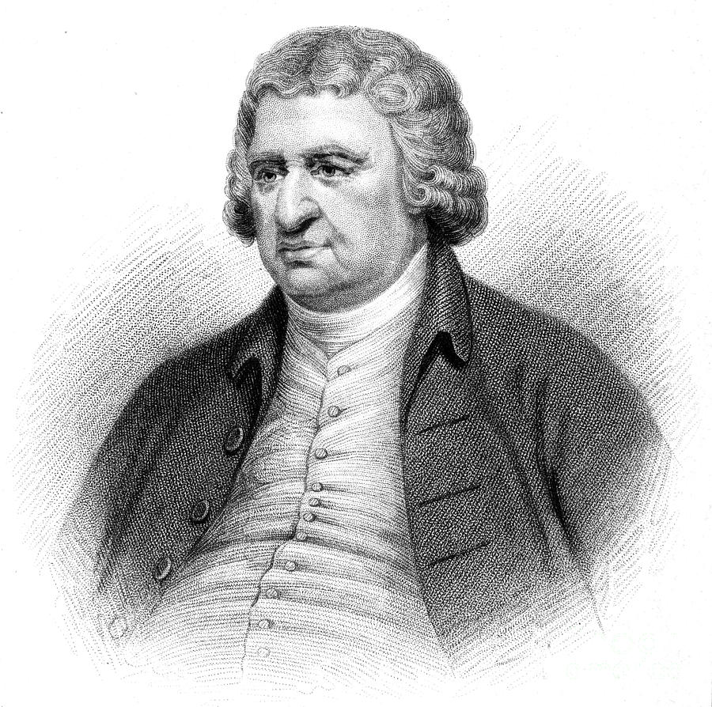

class: left, top, title-slide, bg_skeleton <h1>University of Illinois at Chicago<br>Lucy Delaney</h1> .pull-bottom[ PhD Defense • October 2021] --- class: middle, right, bg_rasp -- .rasptext[ <h3>chapter one:<br><span style="color: black;">the phylogenetic distribution and frequency of self-incompatibility in fabaceae</span></h3>] .rasptext[ <h3>chapter two:<br><span style="color: black;">the orchids and their breeding systems</span></h3>] --- class: middle, right, bg_rasp .opaque[ .rasptext[ <h3>chapter one:<br><span style="color: black;">the phylogenetic distribution and frequency of self-incompatibility in fabaceae</span></h3>]] .opaque[ .rasptext[ <h3>chapter two:<br><span style="color: black;">the orchids and their breeding systems</span></h3>]] .rasptext[ <h3>chapter three:<br><span style="color: black;">university students’ descriptions and explanations of adaptation. I. a framework for systematic analysis</span></h3>] .rasptext[ <h3>chapter four:<br><span style="color: black;">university students’ descriptions and explanations of adaptation. II. a framework for pedagogical explanation</span></h3>] --- class: center, top, bg_walnut -- <br> <br> <br> <br> <h1>everything existing in the universe is the fruit of chance and necessity</h1> --- class: center, top, bg_walnut <br> <br> <br> <br> <h1><span style="opacity: 0.5;">everything existing in the universe is </span>the fruit of <span style="opacity: 0.5;">chance and</span> necessity</h1> --- class: left, top, bg_apple -- <br> <br> <br> <blockquote> This (the contest of Love and Strife) is manifest in the mass of mortal limbs. At one time all the limbs that are the body’s portion are brought together by Love in blooming life’s high season; at another, severed by cruel Strife, they wander each alone by the breakers of life’s sea. It is the same with plants and the fish that make their homes in the waters, with the beasts that have their lairs on the hills and the seabirds that sail on wings. </blockquote> .apple-footnote[Empedocles, etc.] --- class: left, top, bg_apple -- <br> <br> <br> <blockquote> In the beginning, Earth gave birth to plants<br> After their kind, ringed with shining green<br> The hills and plains. The flowering meadows shone<br> with verdure. Then between the various trees<br> a mighty race began, all galloping<br> to be the first to shoot up into the sky </blockquote> .apple-footnote[Lucretius, etc.] --- class: left, top, bg_apple -- <br> <br> <br> <blockquote> If it were not for the flies, the hum of mosquitoes during the day would be much greater. The star-lizard and the spider, called ant-lion, go out and hunt flies with the cleverest technique and the greatest dexterity. But in addition, flies disappear also through the medium of other causes, for example, they die upon eating in competition over the sweet morsels. All animals, in short, can not exist without food, neither can the hunting animal escape being hunted in his turn. ... And in this respect, men do not differ from animals... </blockquote> .apple-footnote[Al-Jahiz, etc.] --- class: left, top, bg_apple -- <br> <br> <br> <blockquote> We explained there that the whole of existence in (all) its simple and composite worlds is arranged in a natural order of ascent and descent, so that everything constitutes an uninterrupted continuum. The essences at the end of each particular stage of the worlds are by nature prepared to be transformed into the essence adjacent to them, either above or below them. </blockquote> .apple-footnote[Ibn Khaldun Muqaddimah] --- class: right, top, bg_apple -- <br> <img src="css/images/img/Georges-Louis-Leclerc.jpg" width="35%" style="border-radius: 10%;"> --- class: right, top, bg_apple <br> <img src="css/images/img/Georges-Louis-Leclerc.jpg" width="20%" style="border-radius: 10%;"> <img src="css/images/img/JP-Lamarck.jpg" width="35%" style="border-radius: 10%;"> --- class: right, top, bg_apple <br> <img src="css/images/img/Georges-Louis-Leclerc.jpg" width="20%" style="border-radius: 10%;"> <img src="css/images/img/JP-Lamarck.jpg" width="20%" style="border-radius: 10%;">  --- class: right, top, bg_apple <br> <br> <br> <br> <h2>common ancestry</h2> --- class: right, top, bg_apple <br> <br> <br> <br> .opaque[ <h2>common ancestry</h2>] <h2>struggle for existence</h2> --- class: right, top, bg_apple <br> <br> <br> <br> .opaque[ <h2>common ancestry</h2>] .opaque[ <h2>struggle for existence</h2>] <h2>mechanistic accounts of change</h2> --- class: middle, center, bg_peach -- <img src="css/images/img/01-house.png" width="70%"> --- class: middle, center, bg_peach --- class: middle, center, bg_peach <img src="css/images/img/03-house.png" width="70%"> --- class: top, center, bg_avo --- class: middle, center, bg_black --- class: middle, center, bg_nopeach --- class: middle, center, bg_peach --- class: top, center, bg_4citrus --- class: middle, top, bg_lemon --- class: top, center, bg_pear --- class: top, right, bg_pine --- class: center, middle, bg_2citrus --- class: right, middle, bg_3citrus --- class: left, middle, bg_cherries --- class: left, middle, bg_pom --- class: right, middle, bg_plum --- class: left, middle, bg_grapes --- class: middle, right, bg_ceratonia --- class: top, right, bg_tamarind --- class: top, left, bg_peanut